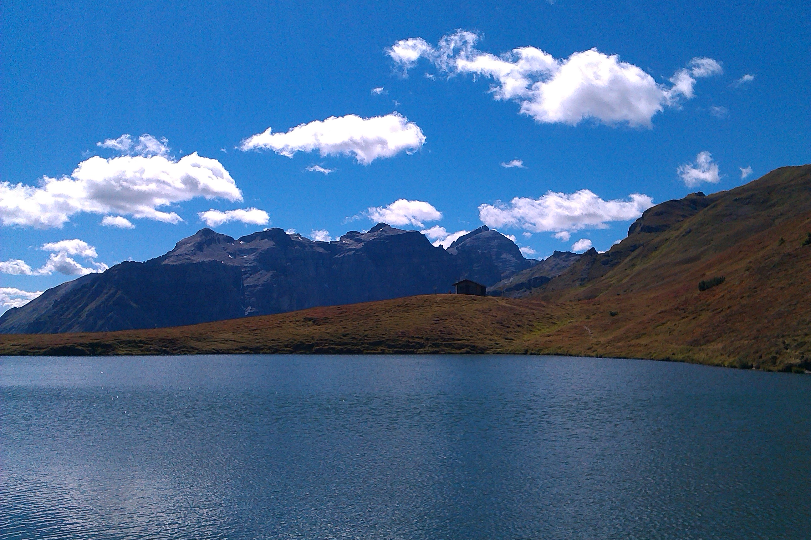
Lichtsee vor den Tribulaunen im Obernbergtal Sept. 2013
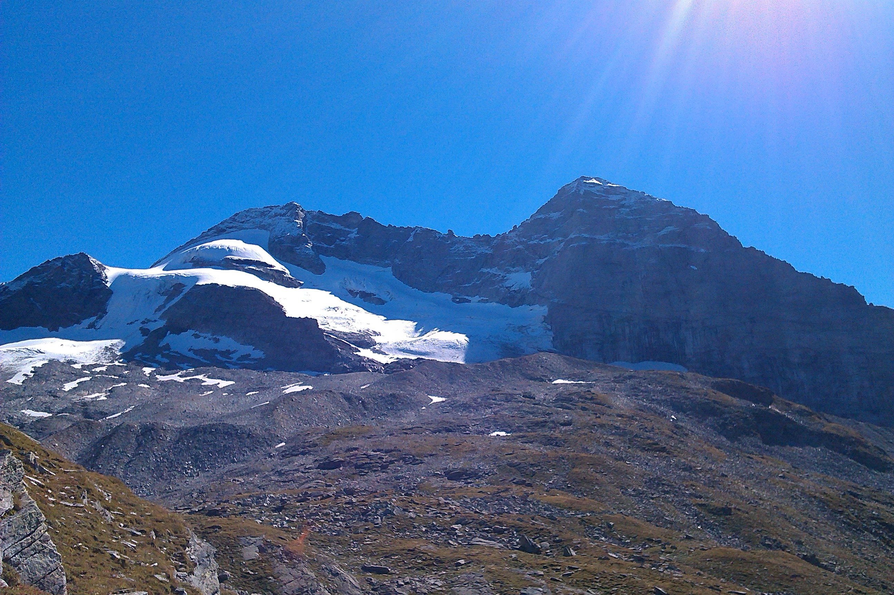
Olperer und Fußstein
Blick vom Weg aus dem Wildlahnertal zur Geraer Hütte Sept. 2013
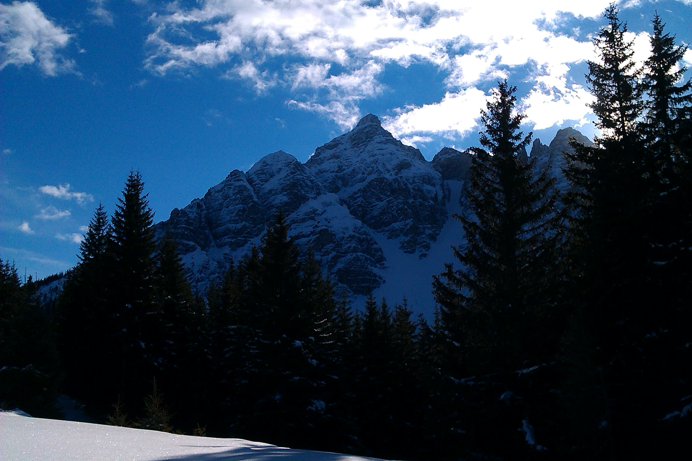
Serles Feb. 2014
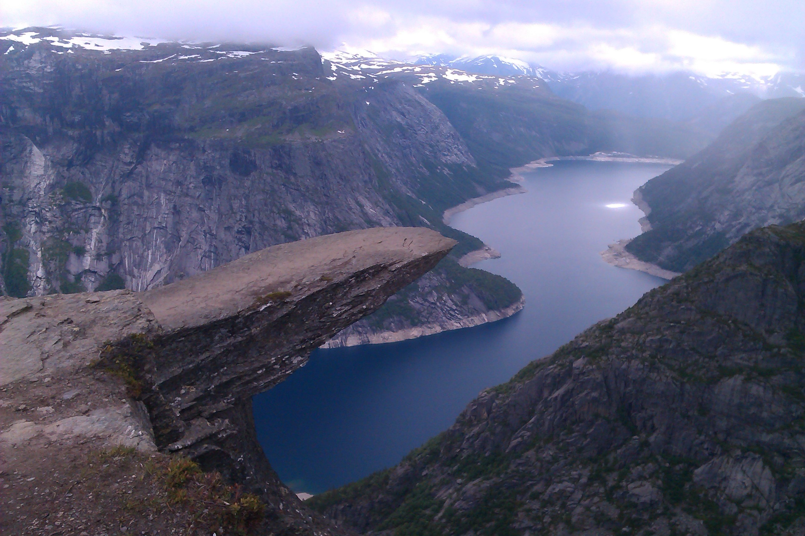
Trollstunga Norwegen Jul. 2016Großglockner Aug. 2016
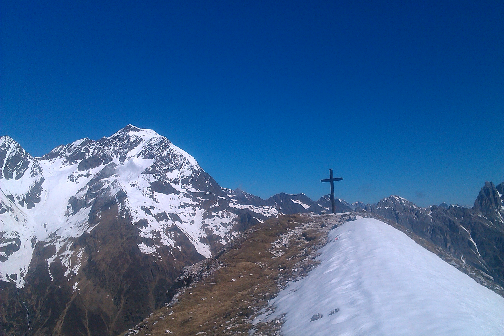
Gipfelkreuz der Garklerin vor dem Habicht
im Gschnitztal Mai. 2017
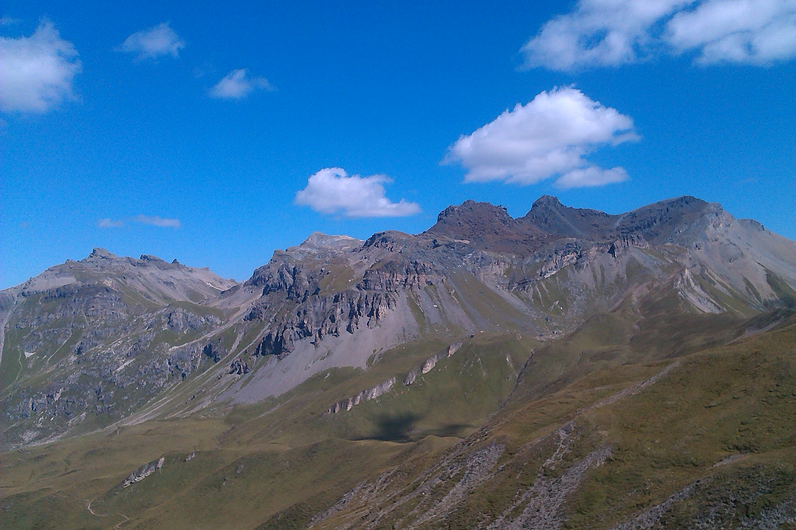
Lizumer Reckner, Lizumer Sonnenspitze und
Tarntaler Köpfe im Navistal Aug. 2017
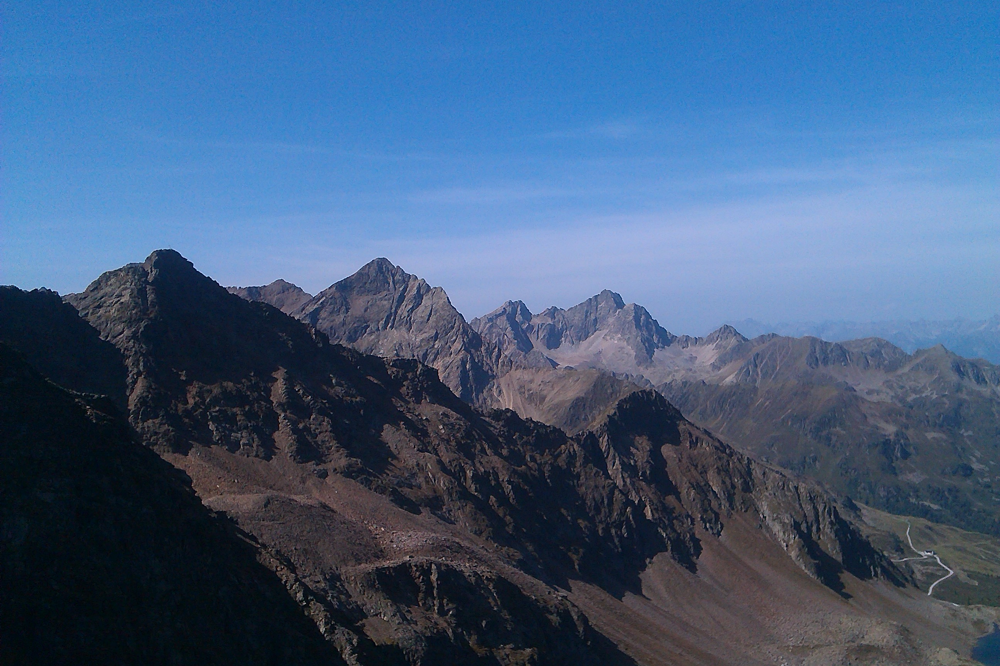
Pockkogel, Zwölferkogel und Acherkogel vom Gaiskogel
bei Kühtai Aug. 2017Blick auf die Kreuzspitze im Venter Tal
beim Abstieg von der Breslauer Hütte Sept. 2017
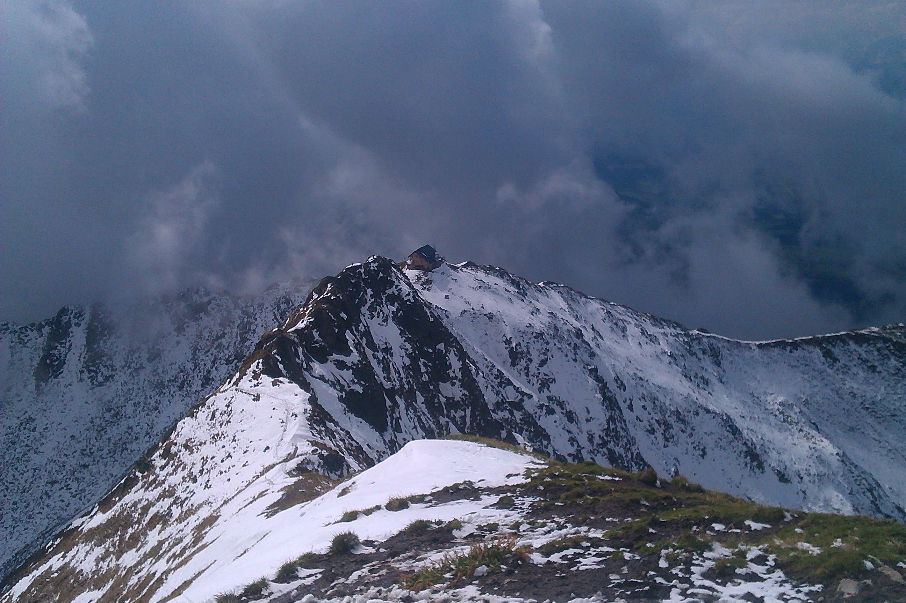
Blick auf die Kellerjochhütte
vom Kellerjoch aus. Sept. 2017
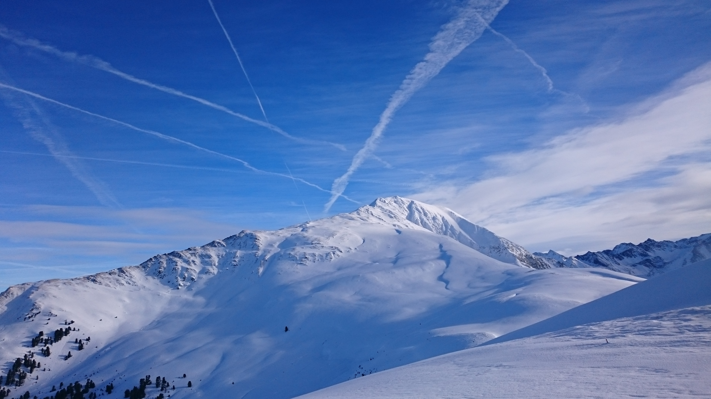
Blick auf den Pirchkogel
beim Aufsteig zum Faltegartenköpfel Jan. 2018
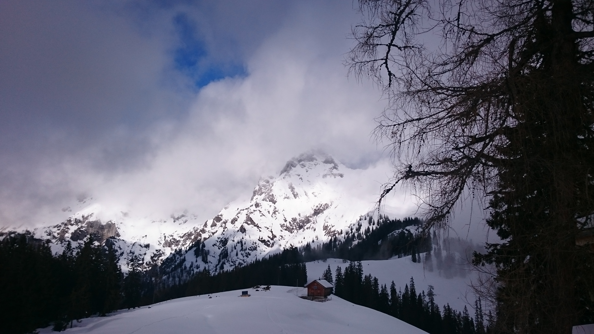
Blick auf den Admonter Reichenstein
von der Mödlinger Hütte Jan. 2018
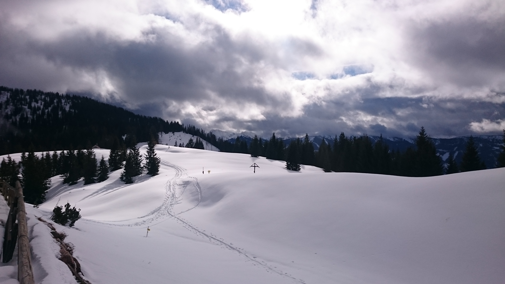
Blick Richtung Süden
von der Mödlinger Hütte Jan. 2018Blick Richtung Südwesten auf den Bosruck
auf dem Rüweg vom Hohen Phyrgas Jan. 2018Gipfelkreuz des Habichts
gegen Südosten Aug. 2018Blick Richtung Osten über den Habichtkamm
am Aufstieg zum Habicht Aug. 2018Blick Richtung WSW (Stubaier Gletscher)
vom Habicht aus Aug. 2018Lamsenjochhütte vor der Lamsenjochspitze
Aug. 2018Blick Richtung SO (Bentlstein, Olperer)
von der Hammerspitze aus Sept. 2018Blick auf die Sonklarspitze
vom Zuckerhütl aus Sept. 2018Blick auf die Serles
vom Aufstieg zum Nederjoch aus Nov. 2018Blick Richtung NW
vom Rennfeld aus Nov. 2018Blick auf den Lugauer
vom Hinkareck aus Dez. 2018
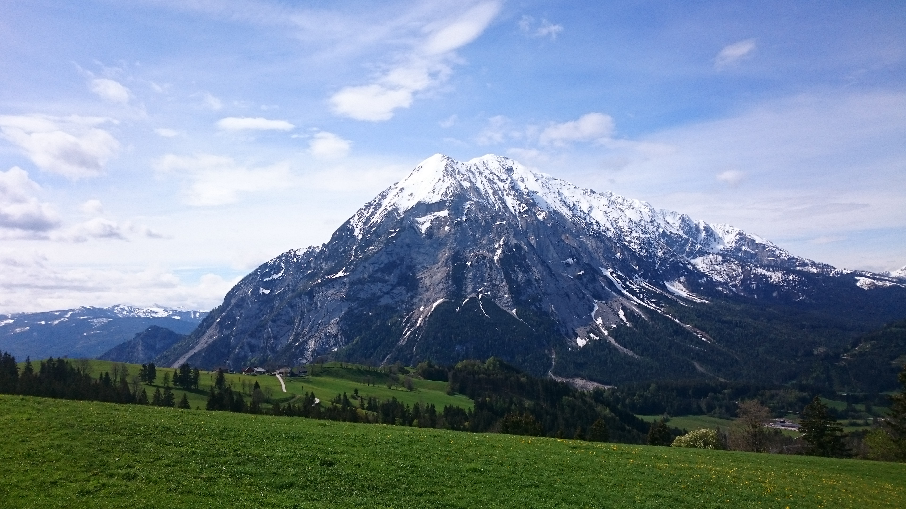
Blick auf den Grimming
vom Weg zum Hechlstein aus Mai 2019
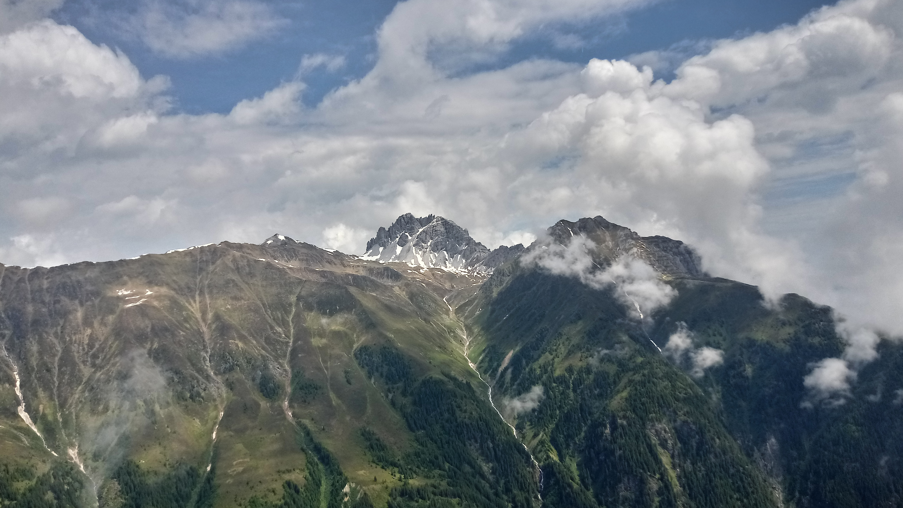
Blick auf die Schlicker Seespitze
vom Seblaskreuz aus Juni 2019
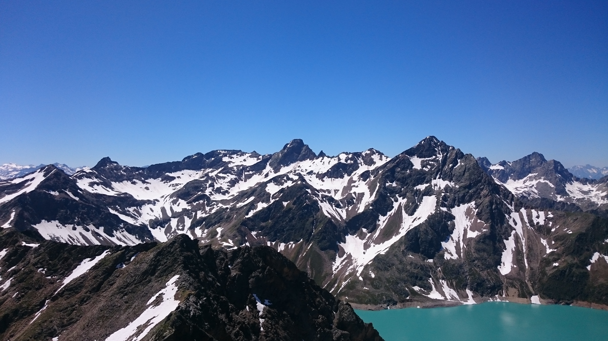
Blick auf den Sulzkogel
vom Pockkogel aus Juni 2019
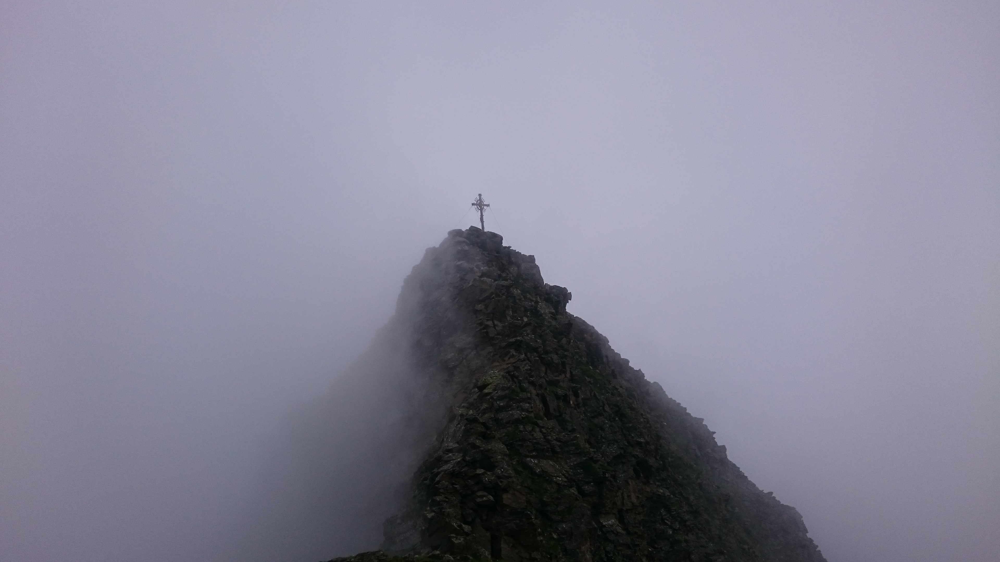
Blick auf das Kreuz der Zwölferspitze